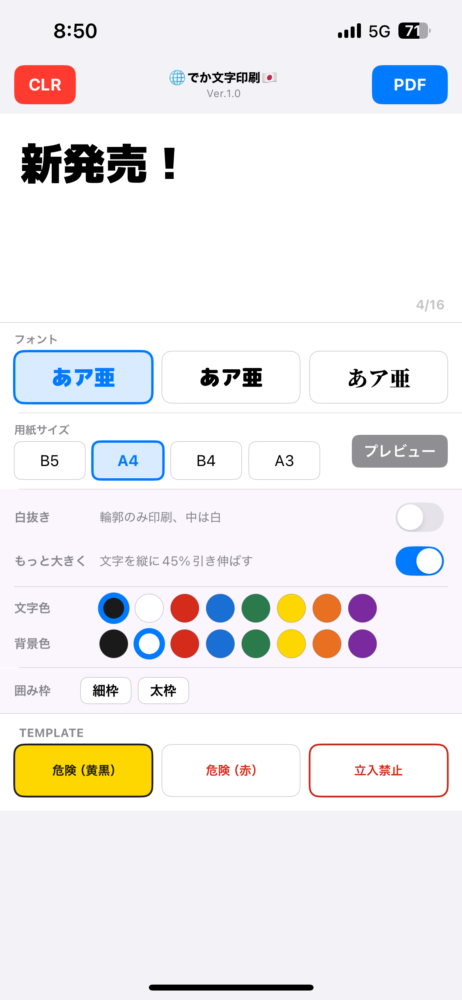
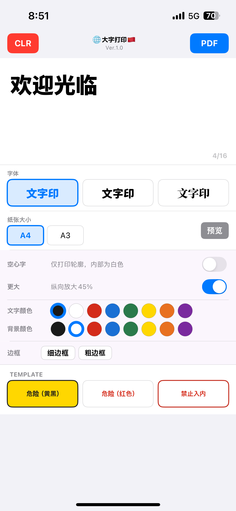
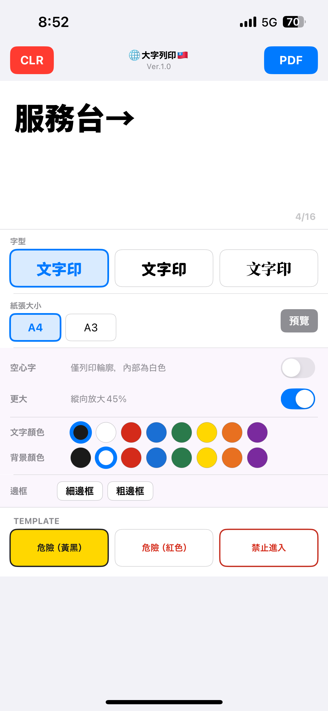
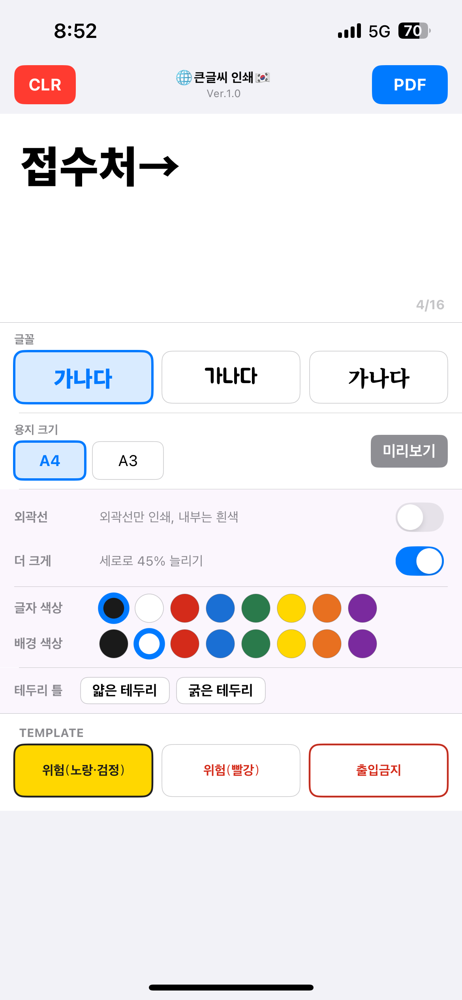

lamiliuq works
Large Sign PDF Maker
入力した文字を1文字ずつ大きく配置したPDFを作成するiPhoneアプリ。学校・イベント・店舗・自治会の案内表示を、すばやく作れます。

iPhone 実機画面
緊急時にお使いください。タップですぐにPDFを作成し、プリンターと共有できます。
でか文字モードでは、設定のフォントの下で「用紙の向き」と「文字の組み」を選べます。
値札や営業時間でよく使う言葉を、1文字にまとめた合成文字です。設定の「合字」ボタンを押すと、入力欄のカーソル位置に入ります。
A4・1枚に、最大3行の文字を大きく配置するモードです。「営業中」「本日休業」のような短い掲示を、1枚で作れます。
lamiliuq works
Large Sign PDF Maker
将输入的文字逐字放大排版，生成PDF的iPhone应用。快速制作学校、活动场所、店铺、社区的引导标识。

iPhone 实机画面
紧急情况下请使用。轻触即可立即创建PDF并与打印机共享。
在「大字」模式下，可在设置的字体下方选择「纸张方向」和「排版方向」。
将常用于营业时间的词合成为1个字符。点击设置中的「连字」按钮，即可在输入框的光标处插入。
在1张A4纸上最多排列3行文字的模式。适合制作「营业中」「今日休息」这类简短告示。
lamiliuq works
Large Sign PDF Maker
將輸入的文字逐字放大排版，生成PDF的iPhone應用程式。快速製作學校、活動場所、店鋪、社區的引導標示。

iPhone 實機畫面
緊急情況下請使用。輕觸即可立即建立PDF並與印表機共享。
在「大字」模式下，可在設定的字型下方選擇「紙張方向」和「排版方向」。
將常用於營業時間的詞合成為1個字元。點選設定中的「合字」按鈕，即可在輸入欄的游標處插入。
在1張A4紙上最多排列3行文字的模式。適合製作「營業中」「今日公休」這類簡短告示。
lamiliuq works
Large Sign PDF Maker
입력한 글자를 한 글자씩 크게 배치한 PDF를 생성하는 iPhone 앱. 학교·행사·가게·마을 안내 표시를 빠르게 만들 수 있습니다.

iPhone 실제 화면
긴급 상황에서 사용하세요. 탭 한 번으로 즉시 PDF를 생성하여 프린터와 공유할 수 있습니다.
큰글씨 모드에서는 설정의 글꼴 아래에서 「용지 방향」과 「텍스트 방향」을 선택할 수 있습니다.
영업 시간 등에 자주 쓰는 말을 1글자로 합친 글자입니다. 설정의 「합자」 버튼을 누르면 입력창의 커서 위치에 들어갑니다.
A4 한 장에 최대 3줄의 글자를 크게 배치하는 모드입니다. 「영업 중」「오늘 휴무」 같은 짧은 안내문을 한 장으로 만들 수 있습니다.